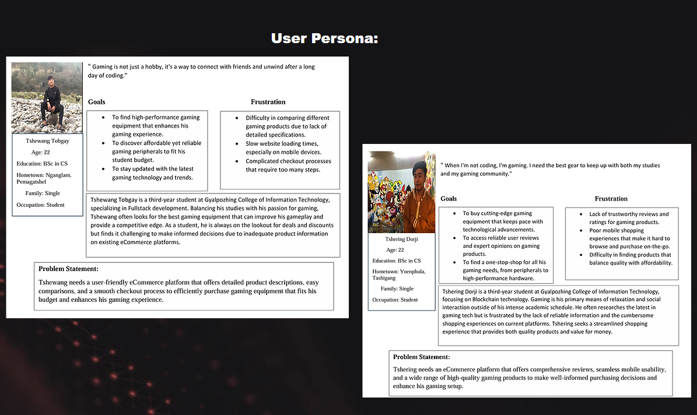
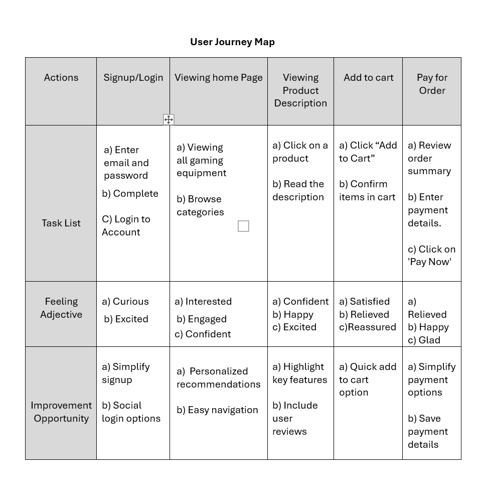
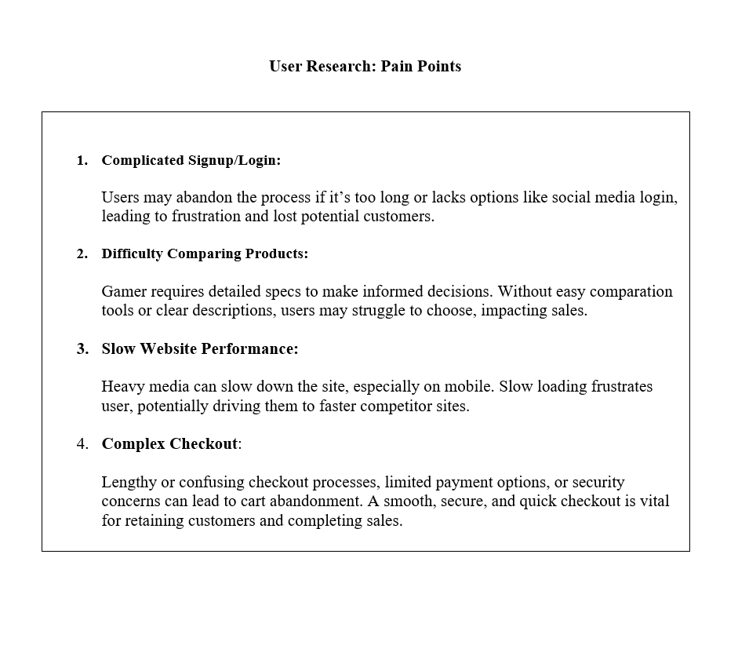
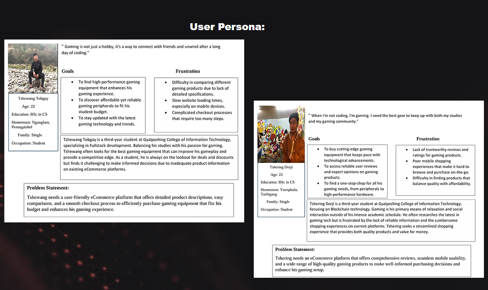
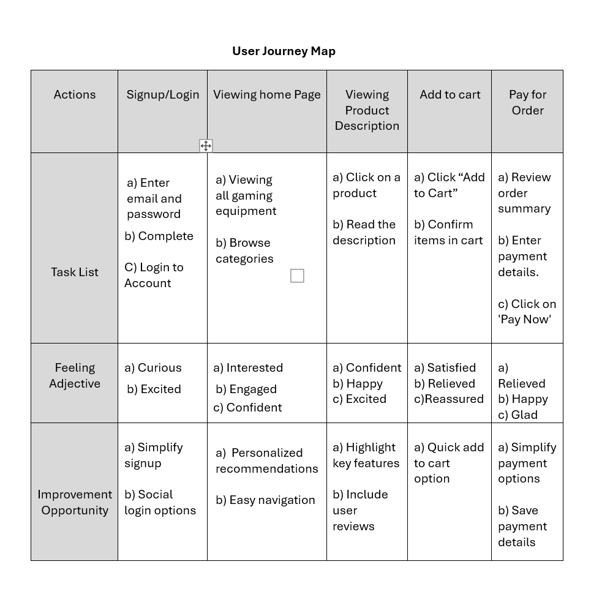
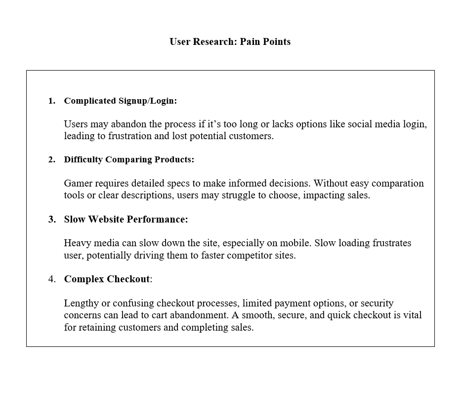
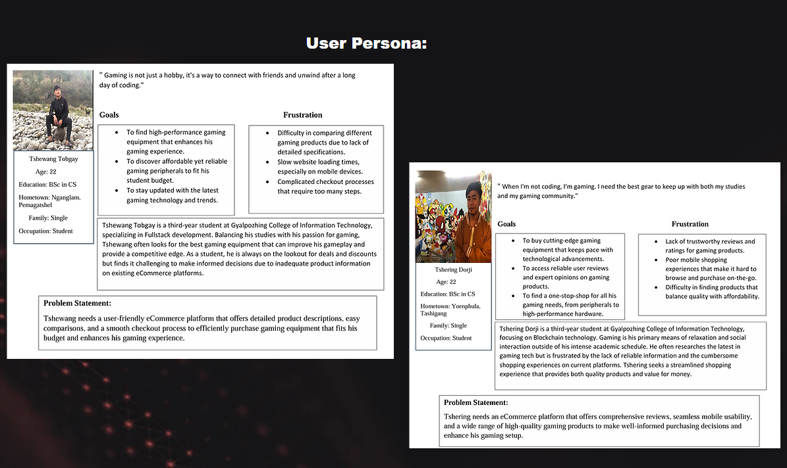
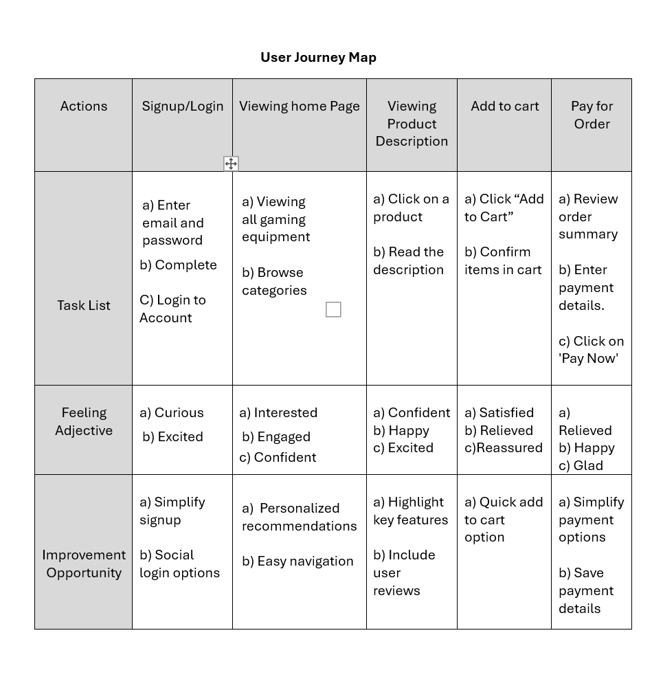
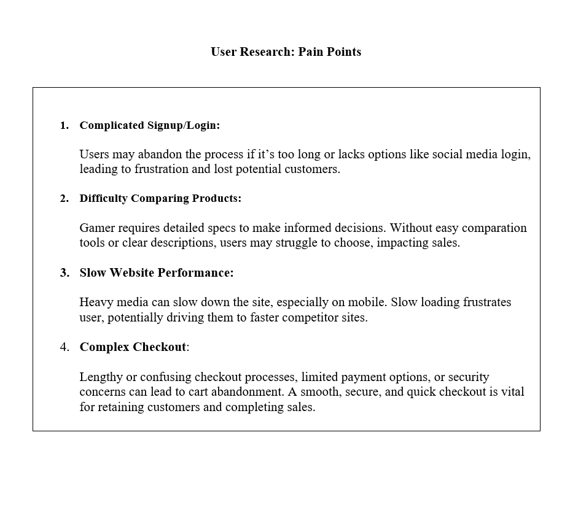

User Research
 






My role:UX/UI Designer and Full-Stack Developer
My Responsibility:Conducting user research and competitive analysis to understand market needs and opportunities. Designing the user interface (UI) and user experience (UX) for the app and website.
The project goal:To deliver a market-leading eCommerce platform for gamers that offers a superior shopping experience, drives higher user engagement, increases sales conversions, and builds brand loyalty. The project aims to stand out in a competitive market by providing unique features tailored to the gaming community.
Parents purchasing gaming equipment for their children.
Tech enthusiasts and professionals seeking high-performance computing equipment.



Sketches or Wireframes: Sketch out the app's main screens, such as the homepage, product listing, product details, cart, and checkout.

Sketches or Wireframes: Draw basic layouts for key pages, including the homepage, category pages, product pages, cart, and checkout.
Digital Wireframe: Created digital wireframes showing the basic layout of each screen using design tools.
Digital Wireframe: Produced digital wireframes that outline the structure of the website using a design tool.
Low-Fidelity Prototype: Developed a clickable prototype that demonstrates the main user flows, like browsing products and completing a purchase.
Low-Fidelity Prototype: Build a low-fidelity prototype that users can interact with, focusing on the main navigation and user tasks.
Usability Study: Conducted a usability study where users interact with the low-fidelity prototype to identify issues and gather feedback.
Usability Study: Tested the low-fidelity prototype with users to identify usability issues and gather insights for improvements.
High-Fidelity Prototype: Created a high-fidelity prototype with full design elements, showcasing the final look and feel of the app.
High-Fidelity Prototype: Developed a high-fidelity prototype that includes complete visual design and interactive elements, simulating the final website experience.
Impact: The design process and launch will enhance user experience by offering a user-centered, accessible, and appealing platform. This inclusive design will attract a broader audience, increasing engagement and sales. The well-designed platform will bolster the brand's reputation in the gaming community, ensuring it remains competitive and relevant. Continuous updates based on user feedback will foster sustained growth in the dynamic eCommerce landscape.
Key Learnings from the Design Process: The design process underscored the importance of a user-centered approach, ensuring that both the app and website are intuitive and user-friendly. Accessibility considerations expanded our user base, while iterative refinement from wireframes to high-fidelity prototypes allowed continuous improvement. Collaboration between designers and developers balanced design aspirations with technical feasibility. Usability studies provided critical insights, enabling informed design decisions and a polished final product.
Possible Next Steps: Next steps include further usability testing with a broader user base, transitioning from high-fidelity prototypes to development, and launching a beta version for final feedback. Continuous monitoring post-launch will guide regular updates and enhancements. A comprehensive marketing strategy and robust customer support system will promote the platform and build user trust and loyalty.